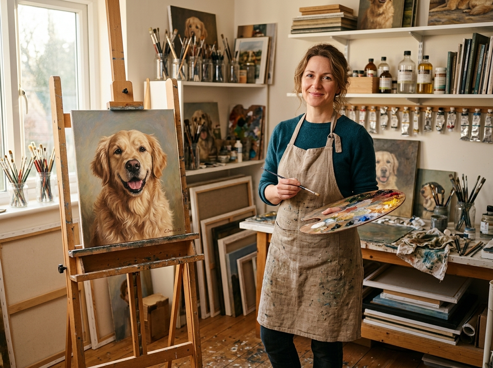
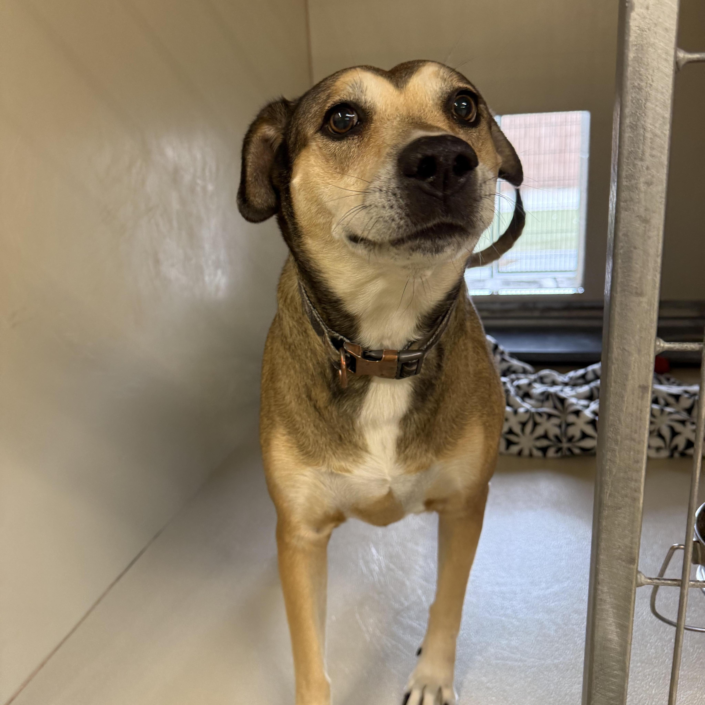
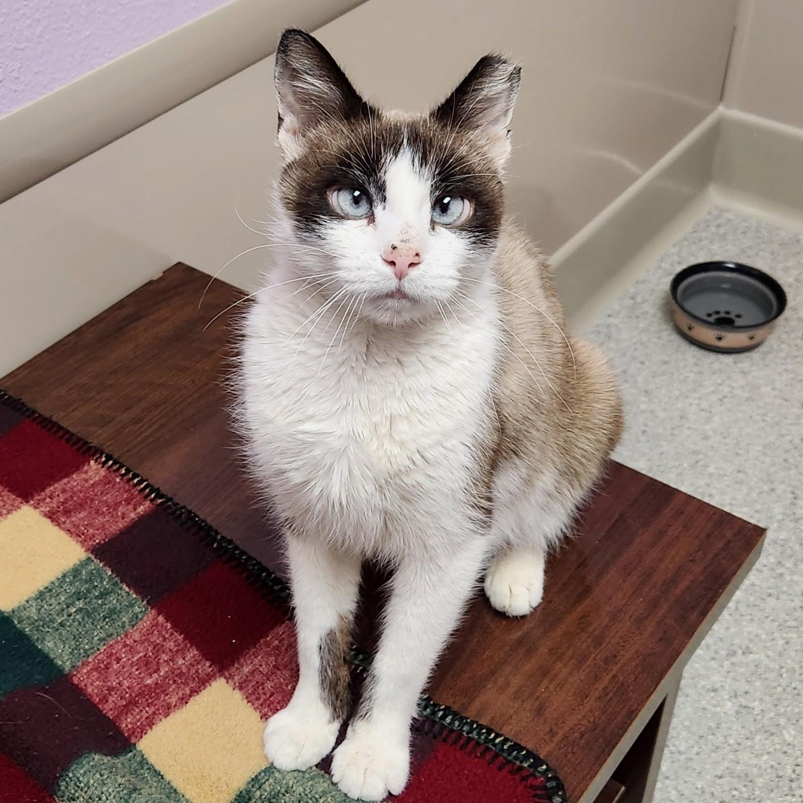
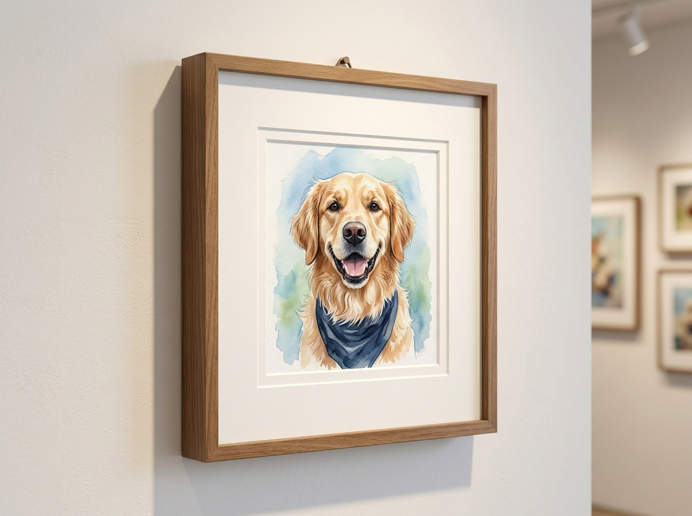

How to Capture Great Reference Photos with Your Phone
Discover simple techniques for using natural window light, eye-level camera angles, and high shutter speeds to get razor-sharp reference photos of dogs and cats.
Read Article →Artist tips on photo selection, medium comparisons, and caring for your custom hand-painted heirlooms.

Discover simple techniques for using natural window light, eye-level camera angles, and high shutter speeds to get razor-sharp reference photos of dogs and cats.
Read Article →
Comparing the rich textural grandeur of Renaissance-style oil on linen versus the soft, ethereal translucency of cotton paper watercolor.
Read Article →
How a custom tribute artwork can bring comfort, healing, and a peaceful physical presence to pet parents navigating the loss of a furry family member.
Read Article →
Essential conservation tips: choosing between floating frames and glass mats, avoiding direct UV sunlight, and gentle dusting techniques for oil varnish.
Read Article →
How Eleanor digitally balances lighting, relative scale, and eye contact from multiple disparate snapshots into one unified family portrait.
Read Article →
An intimate look into painting equestrian companions—capturing muscular anatomy, coat gleam, and noble head carriage on grand statement canvas.
Read Article →